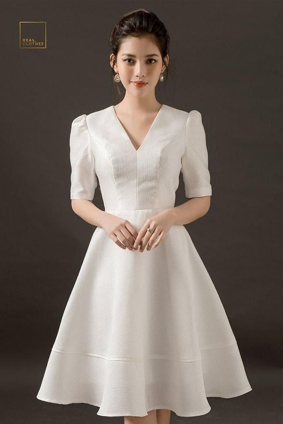
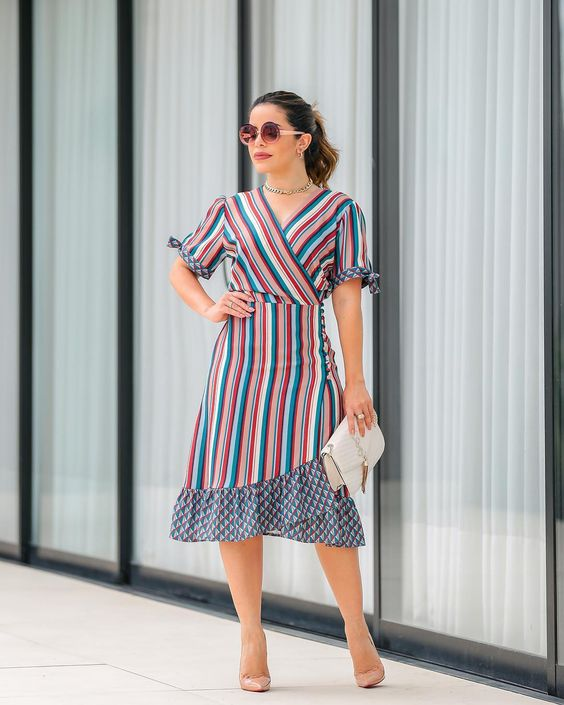

|
 สมัยนี้คนนิยมที่จะใส่ชุดสบาย ๆ แต่ยังคงความน่ารักและความเก๋ของตัวเองอยู่ ชุดเดรสจึงเหมาะกับการที่จะใส่ในวันสบาย ๆ แต่ก่อยังสามารถใส่ไปสถานที่ต่าง ๆ ได้ เช่น ใส่ไปทำบุญ ใส่ไปทำงาน ใส่อยู่บ้าน ใส่ไปเที่ยว หรือสถานที่อื่น ๆ เป็นชุดที่เรียบ ๆ แต่สามารถเพิ่มเครื่องประดับให้ดูมีอะไรมากขึ้น **************************** ชุดเดรสที่ปาดไหล่จะทำให้คอดูยาวขึ้น ควรเลือกเครื่องประดับที่เป็นสี ๆ และควรใส่รองเท้าส้นสูงเพื่อที่จะทำให้ขาของเราดูยาวขึ้น ่ชุดเดรสสีแดงยาวลายดอกมีความพลิ้วๆ แมทช์กับรองเท้าส้นสูง กระเป๋าสีขาวใบเล็ก
ชุดเดรสสีน้ำเงินเข้ม แมทช์กับกระเป๋าถือสีน้ำตาล และสวมรองเท้าสีน้ำตาลให้เข้ากันไปอีก มีเครื่องประดับเพิ่มอีกเล็กน้อยสวยมากกก ชุดเดรสสีโอรสลายดอกไม้เล็กๆน่ารัก ดูเรียบหรู ไม่แก่เกินวัย แมทช์ด้วยกระเป๋าสะพายข้างสีดำ ชุดเดรสโทนม่วงอ่อน ดูเรียบร้อยไม่โป๊และไม่สั้นจนเกินไปและก็ควรเป็นแนวเรียบ ๆ แมทช์ด้วยรองเท้าสีทอง กระเป๋าถือสีขาว เพิ่มความโดดเด่นมากขึ้น ชุดเดรสโทนขาวให้ความเรียบหรู ดูดี เหมาะไปเที่ยว ไปวัดทำบุญมากก แมทช์เข้ากับกระเป๋าสีดำสะพายข้างใบเล็กสวยมากจ้าา เรียบร้อยอ่อนหวานๆ กับเดรสแขนกุดยาวสีเขียวพาสเทล เข้ากับรองเท้าแตะง่ายๆ และกระเป๋าถือสวยๆ ปล่อยผมยาวดัดลอนมา สวยมากจริงๆ เลยเน้อ  การเลือกชุดเดรสสีสดใส เหมาะสำหรับคนวัยทำงานหรือคนที่ชอบใส่สีประมานนี้ เครื่องประดับควรเป็นสีขาวหรือสีเงิน แมทช์กระเป๋าถือ สีเบสิค เพื่อตัดกับชุดที่ใส่ แอบเซ็กซี่นิดๆ แมทช์เดรสยาวสรน้ำตาลสายเดี่ยว ทับด้วย คาร์ดิแกนตัวยาว และรองเท้าสีน้ำตาล และกระเป๋าผ้าง่ายๆ เป็นลุคเซ็กซี่นิดๆ สวยชิลล์ๆ ลุคนี้ควรไปอยู่ชายทะเลมากๆ กับเดรสยาวตรงโปรงๆ เข้ากับรองเท้าแตะน่ารักๆ กระเป๋าถือและแว่นตากันแดด
|
|
|---|